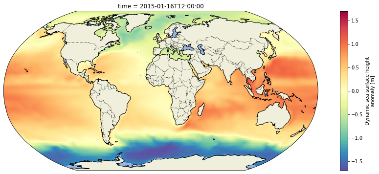

Duped+slightly modified version of the s3 access ipynb. Tested on JPL-issued macbook and my linux box. It starts by setting up a most trusted strategy for batch downloads behind URS ussing curl/wget. Will attempt to add line(s) to your netrc file if needed btw; then it writes your urs cookies to a local file that should effectively “pre-authenticate” future download sessions for those sub domains.
Download ECCO data to local disk & access from Python 3
This notebook is aimed at users who prefer to download the ECCO V4r4 data and analyze their content using local resources, as opposed to in the cloud.
The notebook focuses on the 0.5-degree, monthly sea surface height grids from ECCO V4r4 (10.5067/ECG5D-SSH44). All data files for the collection are downloaded to local disk in their native archive file format – 312 total files in netCDF4 format. The notebook concludes by loading the whole gridded time series into Python with xarray.
Quick Start
A key takeaway in this notebook…follow these instructions on the Earthdata Wiki to authenticate and store your URS cookies in a local file. You can batch download really efficiently this way, effectively “pre-authenticated” through your previous session.
Avoid lines that begin with % or %% in code cells. Those are IPython “magic functions” that tell a line or cell to evaluate in some special mode like by bash instead of py3.
Configure your .netrc file
Good idea to back up your existing netrc file, if you have one. And while youre at it check for these entries because they might exist in there already:
and replace jmcnelis and *** with your Earthdata Login username and password, respectively…
Replace jmcnelis and *** with your Earthdata username and password, and then run the cell to append these two lines to your netrc file, if one exists. Otherwise write them to a new one. (all set up by -a)
Finally, you need to make sure to limit access to the netrc file because it stores your plain text password. Simple on MacOS and Linux:
!chmod 0600~/.netrc
No outputs expected.
Download a sample data file, get your URS cookies, and write them to a local file
Now I’ll download a random file that’s protected by URS/Earthdata Login authentication so that I can grab my URS cookies.
I chose to download a file containing ECCO grid geometries for the 0.5-degree latitude/longitude grid. It’s small and it may prove useful for downstream analysis of the SSH data. (Again, any protected data file will work.)
I used –quiet mode so wget would not dump tons of garbage into the notebook. Confirm that the cookies file exists in your home directory:
!ls ~/.urs_cookies
/Users/jmcnelis/.urs_cookies
And see if the file downloaded successfully to double-confirm it worked as expected (and be aware that the ncdump output is truncated to the first 50 lines):
!ncdump -h GRID_GEOMETRY_ECCO_V4r4_latlon_0p50deg.nc | head -25
And that’s it! You should now be able to use wget and curl to download URS-protected data from PODAAC cloud without providing your creds each time.
Prepare a list of files to download
Now the only step that remains is to get a list of URLs to pass to wget or curl for downloading. There’s a lot of ways to do this – even more so for ECCO V4r4 data because the files/datasets follow well-structured naming conventions – but we will rely on Earthdata Search to do this from the browser for the sake of simplicity.
1. Find the collection/dataset of interest in Earthdata Search.
Start from this complete list of ECCO collections in Earthdata Search (79 in total), and refine the results until you see your dataset of interest. In this case we want monthly sea surface height grids provided at 0.5-degree cell resolution on an interpolated latitude/longitude grid.
2. Pick your collection, then click the green Download All button on the next page.
Click the big green button identified by the red arrow/box in the screenshot below.
That will add all the granules in the collection to your “shopping cart” and then redirect you straight there and present you with the available options for customizing the data prior to download. We will ignore those because they’re mostly in active development and because we want to download all data in the collection.
The screenshot above shows the download customization interface (i.e. “shopping cart”)
3. Click Download Data to get your list of download urls (bottom-left, another green button)
The Download Data button takes you to one final page that provides the list of urls from which to download the files matching your search parameters and any customization options that you selected in the steps that followed. This page will be retained in your User History in case you need to return to it later.
There are several ways that you could get the list of urls into a text file that’s accessible from Jupyter or your local shell. I simply clicked the save button in my browser and downloaded them as a text file to a subdirectory called resources inside this workspace. (You could also copy them into a new notebook cell and write them to a file like we did with the netrc file above.)
Download files in a batch with GNU Wget
I find wget options to be convenient and easy to remember. There are only a handful that I use with any regularity.
The most important wget option for our purpose is set by the -i argument, which takes a path to the input text file containing our download urls. Another nice feature of wget is the ability to continue downloads where you left of during a previously-interuppted download session. That option is turned on by passing the -c argument.
Now run wget against a list of files retrieve from Earthdata Search and see what happens.
!ls resources/*.txt
resources/5237392644-download.txt
Go ahead and create a data/ directory to keep the downloaded files, and then start the downloads into that location by including the -P argument:
<cartopy.mpl.geocollection.GeoQuadMesh at 0x1a344a0a0>

Now plot the whole time series (post-2010) in an animation and write it to an mp4 file called ecco_monthly_ssh_grid_2015_to_x.mp4:
def get_animation(var, cmap: str="Spectral_r"):"""Get time series animation for input xarray dataset"""def draw_map(i: int, add_colorbar: bool): data = var[i] m = data.plot(ax=ax, transform=ccrs.PlateCarree(), add_colorbar=add_colorbar, vmin=var.valid_min, vmax=var.valid_max, cmap=cmap) plt.title(str(data.time.values)[:7])return mdef init():return draw_map(0, add_colorbar=True)def animate(i):return draw_map(i, add_colorbar=False)return init, animate
Now make the animation using the function:
fig, ax = make_figure(proj=ccrs.Robinson())init, animate = get_animation(ssh_after_201x)ani = animation.FuncAnimation(fig=fig, func=animate, frames=ssh_after_201x.time.size, init_func=init, interval=0.2, blit=False, repeat=False)# Now save the animation to an MP4 file:ani.save('outputs/ecco_monthly_ssh_grid_2015_to_x.mp4', writer=animation.FFMpegWriter(fps=8))plt.close(fig)